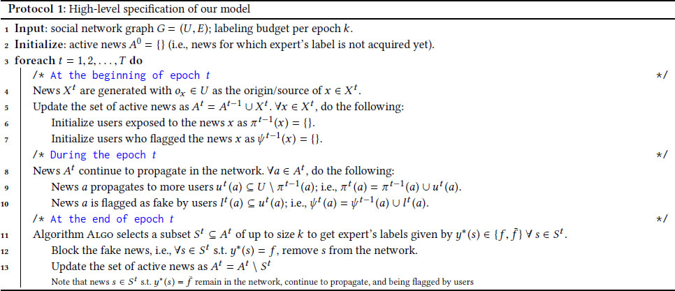
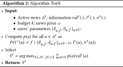
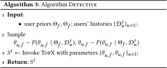

DOI: https://doi.org/10.1145/3184558.3188722
WWW '18: Proceedings of The Web Conference 2018, Lyon, France, April 2018
Our work considers leveraging crowd signals for detecting fake news and is motivated by tools recently introduced by Facebook that enable users to flag fake news. By aggregating users’ flags, our goal is to select a small subset of news every day, send them to an expert (e.g., via a third-party fact-checking organization), and stop the spread of news identified as fake by an expert. The main objective of our work is to minimize the spread of misinformation by stopping the propagation of fake news in the network. It is especially challenging to achieve this objective as it requires detecting fake news with high-confidence as quickly as possible. We show that in order to leverage users’ flags efficiently, it is crucial to learn about users’ flagging accuracy. We develop a novel algorithm,
ACM Reference Format:
Sebastian Tschiatschek, Adish Singla, Manuel Gomez Rodriguez, Arpit Merchant, and Andreas Krause. 2018. Fake News Detection in Social Networks via Crowd Signals. In WWW '18 Companion: The 2018 Web Conference Companion, April 23–27, 2018, Lyon, France. ACM, New York, NY, USA, 8 Pages. https://doi.org/10.1145/3184558.3188722
Fake news (a.k.a. hoaxes, rumors, etc.) and the spread of misinformation have dominated the news cycle since the US presidential election (2016). Social media sites and online social networks, for example Facebook and Twitter, have faced scrutiny for being unable to curb the spread of fake news. There are various motivations for generating and spreading fake news, for instance, making political gains, harming the reputation of businesses, as clickbait for increasing advertising revenue, and for seeking attention1. As a concrete example, Starbucks recently fell victim to fake news with a hoax advertisement claiming that the coffee chain would give free coffee to undocumented immigrants2. While Starbucks raced to deny this claim by responding to individual users on social media, the lightening speed of the spread of this hoax news in online social media highlighted the seriousness of the problem and the critical need to develop new techniques to tackle this challenge. To this end, Facebook has recently announced a series of efforts towards tackling this challenge [10, 11].
Detection via expert's verification.Fake news and misinformation have historically been used as tools for making political or business gains [9]. However, traditional approaches based on verification by human editors and expert journalists do not scale to the volume of news content that is generated in online social networks. In fact, it is this volume as well as the lightening speed of spread in these networks that makes this problem challenging and requires us to develop new computational techniques. We note that such computational techniques would typically complement, and not replace, the expert verification process—even if a news is detected as fake, some sort of expert verification is needed before one would actually block it. This has given rise to a number of third-party fact-checking organizations such as Snopes3 and Factcheck.org4 as well as a code of principles [25] that should be followed by these organizations.
Detection using computational methods. There has been a recent surge in interest towards developing computational methods for detecting fake news (cf., [7] for a survey)—we provide a more detailed overview of these methods in the Related Work section. These methods are typically based on building predictive models to classify whether a news is fake or not via using a combination of features related to news content, source reliability, and network structure. One of the major challenges in training such predictive models is the limited availability of corpora and the subjectivity of labelling news as fake [27, 33]. Furthermore, it is difficult to design methods based on estimating source reliability and network structure as the number of users who act as sources is diverse and gigantic (e.g., over one billion users on Facebook); and the sources of fake news could be normal users who unintentionally share a news story without realizing that the news is fake. A surge of interest in the problem and in overcoming these technical challenges has led to the establishment of a volunteering based association—FakeNewsChallenge5—comprising over 100 volunteers and 70 teams which organizes machine learning competitions related to the problem of detecting fake news.
Given the limitation of the current state-of-the-art computational methods, an alternate approach is to develop hybrid human-AI methods via engaging users of online social networks by enabling them to report fake news. In fact, Facebook has recently taken steps towards this end by launching a fake news reporting tool in Germany [11], as shown in Figure 1. The idea of this tool is that as news propagates through the network, users can flag the news as fake.
In this paper, we develop algorithmic tools to effectively utilize the power of the crowd (flagging activity of users) to detect fake news. Given a set of news, our goal is to select a small subset of k news, send them to an expert for review, and then block the news which are labeled as fake by the expert. We formalize our objective as to minimize the spread of misinformation, i.e., how many users end up seeing a fake news before it is blocked. We design our algorithm
Contemporary results.Kim et al. [16] explored the idea of detecting fake news via leveraging users’ flagging activity. In particular, they introduce a flexible representation of the above problem using the framework of marked temporal point processes. They develop an algorithm,
Computational methods for detecting fake news.There is a large body of related work on rumor detection and information credibility evaluation (with a more recent focus on fake news detection) that are applicable to the problem of detecting fake news. These methods are typically based on building predictive models to classify whether a news is fake. At a high-level level, we can categorize these methods as follows: (i) based on features using news content via natural language processing techniques [13, 31, 34, 38]; (ii) via learning models of source reliability and trustworthiness [20, 22, 28]; (iii) by analyzing the network structure over which a news propagated [6]; and (iv) based on a combination of the above-mentioned features, i.e., linguistic, source, and network structure [1, 17, 18, 35]. As we pointed out in the Introduction, there are several key challenges in building accurate predictive models for identifying fake news including limited availability of corpora, subjectivity in ground truth labels, and huge variability in the sources who generate fake news (often constituting users who do it unintentionally). In short, these methods alone have so far proven to be unsuccessful in tackling the challenge of detecting fake news.
Leveraging crowd signals for web applications.Crowdsourcing has been used in both industrial applications and for research studies in the context of different applications related to web security. For instance, [23] and [5] have evaluated the potential of leveraging the wisdom of crowds for assessing phishing websites and web security. Their studies show a high variability among users—(i) the participation rates of users follows a power-law distribution, and (ii) the accuracy of users’ reports vary, and users with more experience tend to have higher accuracy. The authors also discuss the potential of voting fraud when using users’ reports for security related applications. Wang et al. [32] performed a crowdsourcing study on Amazon's Mechanical Turk for the task of sybil detection in online social networks. Their studies show that there is a huge variability among crowd users in terms of their reporting accuracies that needs to be taken into account for building a practical system. Chen et al. [3], Zheleva et al. [39] present a system similar to that of ours for the task of filtering email spam and SMS spam, respectively. The authors discuss a users’ reputation system whereby reliable users (based on history) can be weighted more when aggregating the reports. However, their work assumes that users’ reputation/reliability is known to the system, whereas the focus of our paper is on learning users’ reputation over time. Freeman [12] discusses the limitations of leveraging user feedback for fake account detection in online social networks—via data-driven studies using Linkedin data, the authors show that there is only a small number of skilled users (who have good accuracy that persists over time) for detecting fake accounts.
Crowdsourcing with expert validationOn a technical side, our approach can be seen as that of a semi-supervised crowdsourcing technique where users’ answers can be validated via an external expert. Hung et al. [14], Liu et al. [21] present probabilistic models to select specific news instances to be labeled by experts that would maximize the reduction in uncertainty about users’ accuracy. With a similar flavor to ours, Zhao et al. [36] presents a Bayesian approach to aggregate information from multiple users, and then jointly infer users’ reliability as well as ground truth labels. Similar to our approach, they model users’ accuracy via two separate parameters for false positive and false negative rates. However, their approach is studied in an unsupervised setting where no expert validation (ground truth labels) are available.

We provide a high-level specification of our model in Protocol 1 . There is an underlying social network denoted as G = (U, E) where U is the set of users in the network. We divide the execution into different epochs denoted as t = 1, 2, …, T, where each epoch could denote a time window, for instance, one day. Below, we provide details of our model—the process of news generation and spread, users’ activity of flagging the news, and selecting news to get expert's labels.
We assume that new news, denoted by the set Xt , are generated at the beginning of every epoch t (cf., line 4).6 In this paper, we consider a setting where each news has an underlying label (unknown to the algorithm) of being “fake” (f) or “not fake” ($\bar{f}$ ). We use random variable Y *(x) to denote this unknown label for a news x and its realization is given by $y^*(x) \in \lbrace f, \bar{f}\rbrace$ . The label y *(x) can only be acquired if news x is sent to an expert for review who would then provide the true label. We maintain a set of “active” news At (cf., line 5) which consists of all news that have been generated by the end of epoch t but for which expert's label have not been acquired yet.
Each news x is associated with a source user who seeded this news, denoted as ox (cf., line 4). We track the spread of news in the set At via a function πt : At → 2 U . For a news a ∈ At , the function πt (a) returns the set of users who have seen the news a by the end of epoch t. During epoch t, let ut (a)⊆U∖π t − 1(a) be the set of additional users (possibly the empty set) to whom news a ∈ At propagates in epoch t, hence πt (a) = π t − 1(a)∪ut (a) (cf., line 9).
In epoch t, when a news a ∈ At propagates to a new user u ∈ ut (a), this user can flag the news to be fake. We denote the set of users who flag news a as fake in epoch t via a set lt (a)⊆ut (a) (cf., line 10). Furthermore, the function ψt (a) returns the complete set of users who have flagged the news a as fake by the end of epoch t.7 For any news x and any user u ∈ U, we denote the label user u would assign to x via a random variable Yu (x). We denote the realization of Yu (x) as $y_u(x) \in \lbrace f, \bar{f}\rbrace$ where yu (x) = f signifies that user has flagged the news as fake. In this paper, we consider a simple, yet realistic, probabilistic model of a user's flagging activity as discussed below.
User abstaining from flagging activity.Reflecting the behavior of real-world users, user u might abstain from actively reviewing the news content (and by default, does not flag the news)—we model this happening with a probability γu ∈ [0, 1]. Intuitively, we can think of 1 − γu as the engagement of user u while participating in this crowdsourcing effort to detect fake news: γu = 1 means that the user is not participating at all.
User's accuracy in flagging the news.With probability (1 − γu ), user u reviews the content of news x and labels the news. We model the accuracy/noise in the user's labels, conditioned on that the user is reviewing the content, as follows:
User's observed activity.Putting this together, we can quantify the observed flagging activity of user u for any news x with the following matrix defined by variables $(\theta _{u,\bar{f}}, \theta _{u,f})$ :
At the end of every epoch t, we apply an algorithm
Let's begin by quantifying the utility of blocking a news a ∈ At at epoch t—it is important to note that, by design, only the fake news are being blocked in the network. Recall that |πt (a)| denotes the number of users who have seen news a by the end of epoch t. We introduce |π ∞(a)| to quantify the number of users who would eventually see the news a if we let it spread in the network. Then, if a news a is fake, we define the utility of blocking news a at epoch t as ${\rm {val}}^t(a) = |\pi ^\infty (a)| - |\pi ^t(a)|$ , i.e., the utility corresponds to the number of users saved from being exposed to fake news a. If an algorithm
In this work, we will assume that the quantity ${\rm{val}}^t(a)$ in Equation 1 can be estimated by the algorithm. For instance, this can be done by fitting parameters of an information cascade model on the spread πt (a) seen so far for news a, and then simulating the future spread by using the learnt parameters [8, 26, 37].
Given the utility values ${\rm{val}}^t(\cdot)$ , we can consider an oracle
In this section we present our methodology and our algorithm
We take a Bayesian approach to deal with unknown labels y *(·) for maximizing the objective in Equation 1. As a warm-up, we begin with a simpler setting where we fix the users’ labeling parameters $(\theta _{u, {\bar{f}}}, \theta _{u, {f}})$ for all users u ∈ U. Let's consider epoch t and news a ∈ At for which we want to infer the true label y *(a). Let ω be the prior that a news is fake; then, we are interested in computing:
At every time t ∈ {1, …, T}, we can use the inferred posterior probabilities to greedily select k news St ⊆At , |St | = k that maximize the total expected utility, i.e.,
In our setting, the users’ parameters $\lbrace \theta _{u, {\bar{f}}}, \theta _{u, {f}}\rbrace _{u \in U}$ are unknown and need to be learnt over time.
Learning about users. We assume a prior distribution over the users’ parameters $(\Theta _{{\bar{f}}}, \Theta _{{f}})$ shared among all users. For each user u ∈ U, we maintain the data history in form of the following matrix:
Given $\mathcal {D}^t_u$ , we can compute the posterior distribution over the users’ parameters using Bayes rules as follows:
Inferring labels.We can now use the users’ parameters posteriors distributions to infer the labels, for instance, by first computing the MAP parameters
Then, at every epoch t we can invoke

In this section, we present our algorithm
Analysis. We analyze our algorithms in a simplified variant of Protocol 1, in particular we make the following simplifications:
 To state our theoretical results, let us introduce the regret of an algorithm
Any algorithm
The proof follows by considering a simple problem involving two users, where we have perfect knowledge about one user with parameters (0.5 + ϵ, 0.5 + ϵ) and the other user either has parameters (1, 1) or (0, 0) (expert or spamer). The key idea here is that any algorithm using point estimates can be tricked into always making decisions based on the first user's flagging activities and is never able to learn about the perfect second user. □
The above result is a consequence of insufficient exploration which is overcome by our algorithm
The expected regret of our algorithm
The proof of this theorem follows via interpreting the simplified setting as a reinforcement learning problem. Then, we can apply the generic results for reinforcement learning via posterior sampling of Osband et al. [24]. In particular, we map our problem to an MDP with horizon 1 as follows. The actions in the MDP correspond to selecting k news from the M sources, the reward for selecting a set of news S is given by Equation 2 (evaluated using the true users’ parameters).
Given that the regret only grows as $\mathcal {O}(\sqrt {T})$ (i.e., sublinear in T), this theorem implies that
Social network graph and news generation. We consider the social circles Facebook graph [19], consisting of 4,039 users (nodes) U and 88,234 edges, computed from survey data collected by using a Facebook app for identifying social circles. Every user can be the seed of news as described shortly and to every user a probability is assigned with which it (hypothetically) generates fake news in case it seeds news. In particular, 20% of the users generate fake news with probability 0.6, 40% of the users generate fake news with probability 0.2 and the remaining 40% of the users generate fake news with probability 0.01 (the class of a user is assigned randomly). For determining the seeds of news, we partition the users into users Un which commonly spread news and users Ur = U∖Un which only occasionally spread news. That is, in every iteration of Protocol 1, we select M = 25 users for generating news, where users in Un are selected with probability $\tfrac{0.5}{|U_n|}$ and users in Ur are selected with probability $\tfrac{0.5}{|U_r|}$ . Hence, in our experimental setup this corresponds to a prior for seeding fake news of about 20%, i.e., ω ≈ 0.2.
News spreading. In our experiments, news spread according to an independent cascade model [15], i.e., the diffusion process of every news is a separate independent cascade with infection probability $0.1 + \mathcal {U}[0, 0.1]$ (fixed when the news is seeded). In every epoch of Protocol 1, we perform two iterations of the independent cascade models to determine the news spread at the next epoch. We estimate the number of users who would eventually see news a, i.e., |π ∞(a)|, by executing the independent cascade models for each news for 600 iterations.
Users’ parameters. In our experiments we consider three types of users, i.e., good users (αu = βu = 0.9), spammers (αu = βu = 0.1) and indifferent users (αu = βu = 0.5). Unless specified otherwise, each user is randomly assigned to one of these three types. Also, we set γu = 0 unless specified otherwise (note that 1 − γu quantifies the engagement of a user).
Algorithms. We execute Protocol 1 for T = 100 epochs. In every epoch of Protocol 1, the evaluated algorithms select k = 5 news to be reviewed by an expert. In our experiments we compare the performance of
In this section we demonstrate the efficiency of our proposed algorithm for fake news detection in a social network. All reported utilities are normalized by $\textrm{Util}(T,\rm\small{ORACLE})$ and all results are averaged over 5 runs.
Learning about users and and exploiting user's flags. In this experiment we compare the average utility, i.e., $\tfrac{1}{t} \textrm{Util}(t,\rm\small{ALGO})$ (cf., Equation 1), achieved by the different algorithms at epoch t for t = 1, …, T. The results are shown in Figure 2a . We observe that
Users’ engagement in flagging. In this experiment, we vary the engagement 1 − γu of the users. We report the utilities $\textrm{Util}(T,\rm\small{ALGO})$ in Figure 2b . We observe that with increasing engagement the performance of
Robustness against spammers. In this experiment we consider only two types of users, i.e., good users and spammers. We vary the fraction of good users relative to the total number of users. We report the utilities $\textrm{Util}(T,\rm\small{ALGO})$ achieved by the different algorithms in Figure 2c . We also plot the additional baseline
In our paper we considered the important problem of leveraging crowd signals for detecting fake news. We demonstrated that any approach that is not learning about users’ flagging behaviour is prone to failure in the presence of adversarial/spam users (who want to “promote” fake news). We proposed the algorithm
This work was supported in part by the Swiss National Science Foundation, and Nano-Tera.ch program as part of the Opensense II project, ERC StG 307036, and a Microsoft Research Faculty Fellowship. Adish Singla acknowledges support by a Facebook Graduate Fellowship.
*Work performed while at ETH Zurich.
1Snopes compiles a list of top 50 fake news stories: http://www.snopes.com/50-hottest-urban-legends/
2http://uk.businessinsider.com/fake-news-starbucks-free-coffee-to-undocumented-immigrants-2017-8
5 http://www.fakenewschallenge.org/
6For simplicity of presentation, we consider every news generated in the network to be unique. In real-world settings, the same news might be posted by multiple users because of externalities, and it is easy to extend our model to consider this scenario.
7Note that as per specification of Protocol 1, for any news x, the source user ox doesn't participate in flagging x.
8Note that a fully Bayesian approach for integrating out uncertainty about users’ parameters in this case is equivalent to using the mean point estimate of the posterior distribution.
This paper is published under the Creative Commons Attribution 4.0 International (CC-BY 4.0) license. Authors reserve their rights to disseminate the work on their personal and corporate Web sites with the appropriate attribution.
WWW '18 Companion, April 23–27, 2018, Lyon, France
© 2018; IW3C2 (International World Wide Web Conference Committee), published under Creative Commons CC-BY 4.0 License.
ACM ISBN 978-1-4503-5640-4/18/04.
DOI: https://doi.org/10.1145/3184558.3188722